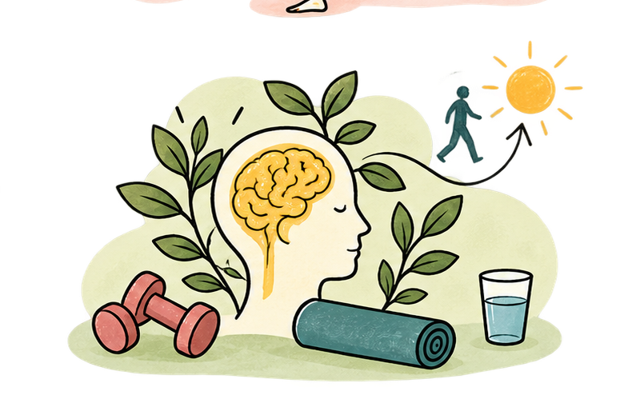

The Bharatanatyam-Mind Link
Recognising the psychological strengths that dance training already helps cultivate.
Using the lived experience of training in Bharatanatyam to understand, explore and work with mental health — through a range of workshops, modules and group experiences.
Recognising the psychological strengths that dance training already helps cultivate.
Going deeper into psychological themes through dance-based experiences, with age-appropriate approaches.
Using dance and movement as a resource to navigate the mental health challenges that show up in everyday life.
A series of workshops, group sessions and engagements for students, parents and educators, to build the mindset, skills and support systems for a more balanced, focused and sustainable board exam experience.
Process over outcome, efficiency over just more hours.
Realistic planning, reverse planning, non-negotiables and flexibility.
The role of sleep, movement and everyday habits for focus, memory and stamina.
Navigating constant news, social media and uncertainty, and learning to decompress and regulate.
Understanding your patterns, assessing what works, and learning to adapt and execute.
Navigating choices, multiple options and decision paralysis with clarity and confidence.
Brain Health explores what we can do earlier in life to support cognitive and psychological wellbeing.
With changing lifestyles and a growing burden of neurodegenerative conditions, the project focuses particularly on the 45–60 age group and the role of everyday habits in long-term brain health.
Through workshops and collaborative spaces bringing together a counselling psychologist and a licensed neurophysiotherapist, we explore stress, movement, cognitive longevity, and practical habits that support a healthier brain over time.


An awareness and psychoeducation programme for 14–18-year-olds exploring how academic achievement, language and self-worth can become intertwined.
For students whose mother tongue differs from the primary language of academic instruction, the programme creates space to recognize language as a medium for learning, not a measure of ability or intelligence.
It helps young people untangle their self-worth from marks, grades, or language proficiency, building authentic self-trust.
Host Bhasha & Beyond at Your Institution →Moments from our interactive workshops, somatic explorations, and collaborative discussions.


Whether you are an educational institution, classical arts organisation, healthcare specialist, or youth collective, we welcome thoughtful partnerships.